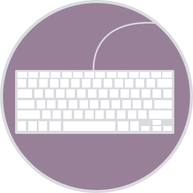

There are a couple of ways to start using Sass:
-
Applications

There are a good many applications that will get you up and running with Sass in a few minutes for Mac, Windows, and Linux. You can download most of the applications for free but a few of them are paid apps (and totally worth it).
- CodeKit (Paid)
- Compass.app (Paid, Open Source)
- Ghostlab (Paid)
- Hammer (Paid)
- Koala (Open Source)
- LiveReload (Paid, Open Source)
- Prepros (Paid)
- Scout (Open Source)
-
Command Line

- Linux
- If you're using a distribution of Linux, you'll need to install Ruby first. You can install Ruby through the apt package manager, rbenv, or rvm.
sudo su -c "gem install sass"
- Windows
- Before you start using Sass you will need to install Ruby. The fastest way to get Ruby on your Windows computer is to use Ruby Installer. It's a single-click installer that will get everything set up for you super fast.
- The installer will also install a Ruby command line powershell application that will let you use the Ruby libraries.
- Mac
- If you prefer the command line over an application then getting Sass set up is a fairly quick process. Sass has a Ruby dependency but if you're using a Mac, congratulations, Ruby comes pre-installed.
- Install Sass
-
Here's the quickest way we've found to start using Sass by using the command line:
-
Open your Terminal or Command Prompt. On the Mac the Terminal.app comes installed by default. It's located in your "Utilities" folder. On Windows, run `cmd`.
-
Install Sass. Ruby uses Gems to manage its various packages of code like Sass. In your open terminal window type:
gem install sass
This will install Sass and any dependencies for you. It's pretty magical. If you get an error message then it's likely you will need to use the
sudocommand to install the Sass gem. It would look like:sudo gem install sass
-
Double-check. You should now have Sass installed, but it never hurts to double-check. In your terminal application you can type:
sass -v
It should return
Sass 3.4.22 (Selective Steve). Congratulations! You've successfully installed Sass. -
Go and play. If you're brand new to Sass we've set up some resources to help you learn pretty darn quick.
-